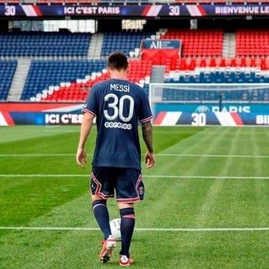
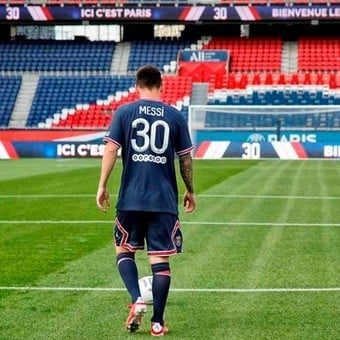

Es un futbolista argentino que juega como delantero o centrocampista en el Paris Saint-Germain de la Ligue 1 de Francia. Es internacional con la Selección Argentina, equipo del que es capitán.
Considerado con frecuencia el mejor jugador del mundo y uno de los mejores de todos los tiempos, es el único futbolista en la historia que ha ganado, entre otras distinciones, seis veces el Balón de Oro, los cuatro primeros de forma consecutiva; además de recibir seis Botas de Oro, un FIFA World Player, y un The Best FIFA. En 2020, se convirtió en el primer futbolista en recibir un premio Laureus, además de ser incluido en el Dream Team del Balón de Oro.
 
